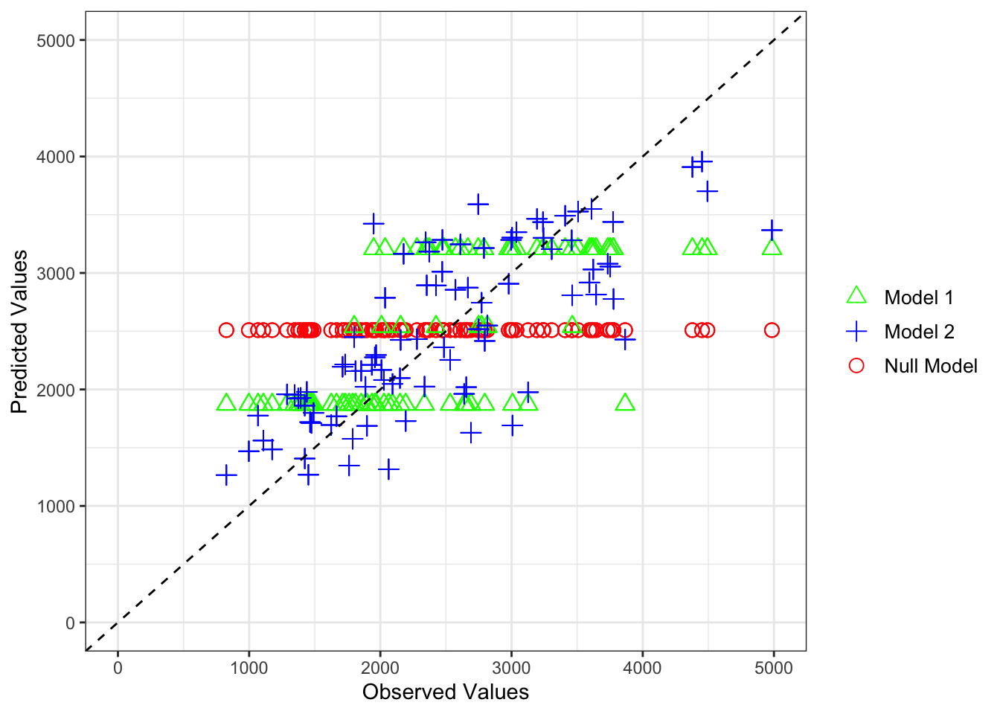

library(tidymodels)
library(tidyverse)
library(ggplot2)
library(yardstick)
library(pROC)
library(caret)Fitting Exercise
Loading necessary packages
Importing the Mavoglurant dataset from this GitHub repository
data_location <- here::here("fitting-exercise", "Mavoglurant_A2121_nmpk.csv")
# Reading the CSV file into a data frame
mavoglurant <- readr::read_csv(data_location)Rows: 2678 Columns: 17
── Column specification ────────────────────────────────────────────────────────
Delimiter: ","
dbl (17): ID, CMT, EVID, EVI2, MDV, DV, LNDV, AMT, TIME, DOSE, OCC, RATE, AG...
ℹ Use `spec()` to retrieve the full column specification for this data.
ℹ Specify the column types or set `show_col_types = FALSE` to quiet this message.Exploratory Data Analysis of the Mavoglurant data set
# Summary table of the data prior to any mutation or cleaning
summary(mavoglurant) ID CMT EVID EVI2
Min. :793.0 Min. :1.000 Min. :0.00000 Min. :0.0000
1st Qu.:832.0 1st Qu.:2.000 1st Qu.:0.00000 1st Qu.:0.0000
Median :860.0 Median :2.000 Median :0.00000 Median :0.0000
Mean :858.8 Mean :1.926 Mean :0.07394 Mean :0.1613
3rd Qu.:888.0 3rd Qu.:2.000 3rd Qu.:0.00000 3rd Qu.:0.0000
Max. :915.0 Max. :2.000 Max. :1.00000 Max. :4.0000
MDV DV LNDV AMT
Min. :0.00000 Min. : 0.00 Min. :0.000 Min. : 0.000
1st Qu.:0.00000 1st Qu.: 23.52 1st Qu.:3.158 1st Qu.: 0.000
Median :0.00000 Median : 74.20 Median :4.306 Median : 0.000
Mean :0.09373 Mean : 179.93 Mean :4.085 Mean : 2.763
3rd Qu.:0.00000 3rd Qu.: 283.00 3rd Qu.:5.645 3rd Qu.: 0.000
Max. :1.00000 Max. :1730.00 Max. :7.456 Max. :50.000
TIME DOSE OCC RATE
Min. : 0.000 Min. :25.00 Min. :1.000 Min. : 0.00
1st Qu.: 0.583 1st Qu.:25.00 1st Qu.:1.000 1st Qu.: 0.00
Median : 2.250 Median :37.50 Median :1.000 Median : 0.00
Mean : 5.851 Mean :37.37 Mean :1.378 Mean : 16.55
3rd Qu.: 6.363 3rd Qu.:50.00 3rd Qu.:2.000 3rd Qu.: 0.00
Max. :48.217 Max. :50.00 Max. :2.000 Max. :300.00
AGE SEX RACE WT
Min. :18.0 Min. :1.000 Min. : 1.000 Min. : 56.60
1st Qu.:26.0 1st Qu.:1.000 1st Qu.: 1.000 1st Qu.: 73.30
Median :31.0 Median :1.000 Median : 1.000 Median : 82.60
Mean :32.9 Mean :1.128 Mean : 7.415 Mean : 83.16
3rd Qu.:40.0 3rd Qu.:1.000 3rd Qu.: 2.000 3rd Qu.: 90.60
Max. :50.0 Max. :2.000 Max. :88.000 Max. :115.30
HT
Min. :1.520
1st Qu.:1.710
Median :1.780
Mean :1.762
3rd Qu.:1.820
Max. :1.930 Plotting the outcome variable (DV) as a function of time, stratified by DOSE, and grouped by ID
# Plot DV vs. time, stratified by DOSE and grouped by ID
dv_dose <- ggplot(mavoglurant, aes(x = TIME, y = DV, group = ID, color = DOSE)) +
geom_line() +
geom_point() +
labs(x = "Time", y = "Outcome Variable (DV)", color = "Dose") +
ggtitle("Outcome Variable vs. Time Stratified by Dose") +
theme_minimal()
print(dv_dose)
Filtering the data set to only include OCC = 1 observations
strat_mavo <- mavoglurant %>%
filter(OCC == "1")Filtering the data set to only include non zero values for TIME, computing the sum of DV and assigning it to variable Y,
# Compute the sum of DV variable for each individual (# total drug as a sum)
summarized_mavo <- strat_mavo %>%
filter(AMT == "0") %>%
group_by(ID) %>%
dplyr::summarize(Y = sum(DV))
# Create a data frame with observations where TIME == 0
time_zero_data <- strat_mavo %>%
filter(TIME == "0")
# Join the summarized data with the data at time zero
joined_mavo <- left_join(summarized_mavo, time_zero_data, by = "ID")
# Print the dimensions of the combined data frame
dim(joined_mavo)[1] 120 18Converting RACE and SEX variables to factor variables and only including necessary columns as well as printing a summary table of the joined data set.
# Convert RACE and SEX to factor variables
final_data <- joined_mavo %>%
select(Y,DOSE,AGE,SEX,RACE,WT,HT) %>%
mutate(across(c(SEX, RACE), as.factor))
readr::write_rds(final_data,"mavoglurant.rds")
# View the first few rows of the joined data set
head(final_data)# A tibble: 6 × 7
Y DOSE AGE SEX RACE WT HT
<dbl> <dbl> <dbl> <fct> <fct> <dbl> <dbl>
1 2691. 25 42 1 2 94.3 1.77
2 2639. 25 24 1 2 80.4 1.76
3 2150. 25 31 1 1 71.8 1.81
4 1789. 25 46 2 1 77.4 1.65
5 3126. 25 41 2 2 64.3 1.56
6 2337. 25 27 1 2 74.1 1.83# Summary Table of joined_mavo
print(summary(final_data)) Y DOSE AGE SEX RACE
Min. : 826.4 Min. :25.00 Min. :18.00 1:104 1 :74
1st Qu.:1700.5 1st Qu.:25.00 1st Qu.:26.00 2: 16 2 :36
Median :2349.1 Median :37.50 Median :31.00 7 : 2
Mean :2445.4 Mean :36.46 Mean :33.00 88: 8
3rd Qu.:3050.2 3rd Qu.:50.00 3rd Qu.:40.25
Max. :5606.6 Max. :50.00 Max. :50.00
WT HT
Min. : 56.60 Min. :1.520
1st Qu.: 73.17 1st Qu.:1.700
Median : 82.10 Median :1.770
Mean : 82.55 Mean :1.759
3rd Qu.: 90.10 3rd Qu.:1.813
Max. :115.30 Max. :1.930 Now it’s time to create some figures and tables to explore the new joined data set, joined_mavo. Since a codebook was not provided, I am going to create some plots to try to assume which values of SEX (1 or 2) correlate with Male and Female.
# Relationship between SEX and DOSE
sex_dose <- ggplot(joined_mavo, aes(x = DOSE, fill = SEX)) +
geom_bar(position = "dodge", color = "black") +
labs(x = "Dose", y = "Count", fill = "SEX") +
ggtitle("Relationship between DOSE and SEX") +
scale_fill_manual(values = c("1" = "lightblue", "2" = "lightgreen")) +
theme_minimal()
print(sex_dose)Warning: The following aesthetics were dropped during statistical transformation: fill.
ℹ This can happen when ggplot fails to infer the correct grouping structure in
the data.
ℹ Did you forget to specify a `group` aesthetic or to convert a numerical
variable into a factor?Warning: No shared levels found between `names(values)` of the manual scale and the
data's fill values.
#Relationship between SEX and WT (weight)
sex_wt <- ggplot(joined_mavo, aes(x = SEX, y = WT, fill = SEX)) +
geom_boxplot() +
labs(x = "SEX", y = "Weight", fill = "SEX") +
ggtitle("Relationship between Sex and Weight") +
scale_fill_manual(values = c("1" = "lightblue", "2" = "lightgreen")) +
theme_minimal()
print(sex_wt)Warning: Continuous x aesthetic
ℹ did you forget `aes(group = ...)`?Warning: The following aesthetics were dropped during statistical transformation: fill.
ℹ This can happen when ggplot fails to infer the correct grouping structure in
the data.
ℹ Did you forget to specify a `group` aesthetic or to convert a numerical
variable into a factor?Warning: No shared levels found between `names(values)` of the manual scale and the
data's fill values.
As we can see from the plot exploring the relationship between sex and dose, the sex assigned the value 1 had much higher doses on average than the sex assigned the value 2. When exploring the relationship between sex and weight, we can see that sex assigned the value 1 weighs considerably more on average than the sex assigned value 2. From these plots I can comfortably assume that SEX = 1 corresponds to Male and SEX = 2 corresponds to female.
Creating plots to determine a relationship between AGE and Y.
y_age <- ggplot(joined_mavo, aes(x = AGE, y = Y)) +
geom_point() +
labs(x = "Age", y = "Y") +
ggtitle("Relationship between Y and Age") +
theme_minimal()
print(y_age)From this plot we can see no discernible relationship between the outcome variable Y and Age.
Model Fitting
Now we are going to move onto model fitting. Please note that I had trouble using the rmse() function due to strange errors so I had to rework the coding process to calculate the RMSE and R-squared values. I also elected to use the pROC package to help me compute ROC-AUC values for the logistic models.
Fitting a linear model to the continuous outcome (Y) using the main predictor of interest, DOSE.
lin_mod <- linear_reg() %>% set_engine("lm")
# Fit a linear model
y_dose_model <- lin_mod %>% fit(Y ~ DOSE, data = final_data)
# Summarize the model
tidy(y_dose_model)# A tibble: 2 × 5
term estimate std.error statistic p.value
<chr> <dbl> <dbl> <dbl> <dbl>
1 (Intercept) 323. 199. 1.62 1.07e- 1
2 DOSE 58.2 5.19 11.2 2.69e-20Fitting a linear model to Y using all predictors
# Fit a linear model using all predictors
y_all_model <- lin_mod %>% fit(Y ~ ., data = final_data)
# Summarize the model
tidy(y_all_model)# A tibble: 9 × 5
term estimate std.error statistic p.value
<chr> <dbl> <dbl> <dbl> <dbl>
1 (Intercept) 3387. 1835. 1.85 6.76e- 2
2 DOSE 59.9 4.88 12.3 2.05e-22
3 AGE 3.16 7.82 0.403 6.88e- 1
4 SEX2 -358. 217. -1.65 1.02e- 1
5 RACE2 155. 129. 1.21 2.31e- 1
6 RACE7 -405. 448. -0.904 3.68e- 1
7 RACE88 -53.5 245. -0.219 8.27e- 1
8 WT -23.0 6.40 -3.60 4.71e- 4
9 HT -748. 1104. -0.678 4.99e- 1Calculating RMSE and R-Squared values for both models, y_dose_model & y_all_model.
### y_dose_model calculations
# Compute the RMSE and R squared for model 1
metrics_3 <- y_dose_model %>%
predict(final_data) %>%
bind_cols(final_data) %>%
metrics(truth = Y, estimate = .pred)
print(metrics_3)# A tibble: 3 × 3
.metric .estimator .estimate
<chr> <chr> <dbl>
1 rmse standard 666.
2 rsq standard 0.516
3 mae standard 517. The RMSE value of 666 could indicate large amounts of error or poor model performance. The R-squared value of 0.51 (~51%) could also indicate poorer model performance as we would like to maximize R-squared.
### y_all_model calculations
# Compute the RMSE and R squared for model 2
metrics_4 <- y_all_model %>%
predict(final_data) %>%
bind_cols(final_data) %>%
metrics(truth = Y, estimate = .pred)
# Print the results
print(metrics_4)# A tibble: 3 × 3
.metric .estimator .estimate
<chr> <chr> <dbl>
1 rmse standard 591.
2 rsq standard 0.619
3 mae standard 444. This model performed better than the previous model. Our RMSE is lower (590) and our R-squared is higher at 0.619 (~62%).
Now we are going to move on to logistic models for the binary outcome (SEX) using DOSE as the main predictor of interest.
log_mod <- logistic_reg() %>% set_engine("glm")
#Fit a logistic model to SEX using the main predictor of interest,DOSE.
logit_sex_model <- log_mod %>% fit(SEX ~ DOSE, data = final_data)
# Summarize the model
tidy(logit_sex_model)# A tibble: 2 × 5
term estimate std.error statistic p.value
<chr> <dbl> <dbl> <dbl> <dbl>
1 (Intercept) -0.765 0.854 -0.896 0.370
2 DOSE -0.0318 0.0243 -1.31 0.192Now I am going to fit a logistic model to sex using all predictors
# Fit logistic model with all predictors
logit_model_all <- log_mod %>% fit(SEX ~ ., data = final_data)
# Summarize the model
tidy(logit_model_all)# A tibble: 9 × 5
term estimate std.error statistic p.value
<chr> <dbl> <dbl> <dbl> <dbl>
1 (Intercept) 60.3 18.0 3.34 0.000824
2 Y -0.00104 0.000963 -1.08 0.280
3 DOSE -0.0308 0.0776 -0.396 0.692
4 AGE 0.0834 0.0607 1.37 0.170
5 RACE2 -1.93 1.37 -1.40 0.161
6 RACE7 0.118 3.85 0.0306 0.976
7 RACE88 -1.50 2.19 -0.683 0.494
8 WT -0.0628 0.0794 -0.791 0.429
9 HT -33.2 11.1 -3.00 0.00274 Computing ROC-AUC and accuracy for logit_sex_model
# Compute the accuracy and AUC for model 1
m1_acc <- logit_sex_model %>%
predict(final_data) %>%
bind_cols(final_data) %>%
metrics(truth = SEX, estimate = .pred_class) %>%
filter(.metric == "accuracy")
m1_auc <- logit_sex_model %>%
predict(final_data, type = "prob") %>%
bind_cols(final_data) %>%
roc_auc(truth = SEX, .pred_1)
print(m1_acc)# A tibble: 1 × 3
.metric .estimator .estimate
<chr> <chr> <dbl>
1 accuracy binary 0.867print(m1_auc)# A tibble: 1 × 3
.metric .estimator .estimate
<chr> <chr> <dbl>
1 roc_auc binary 0.592An accuracy of 0 indicates that the model’s predictions did not match any of the observed values in the data. A ROC-AUC value of 0.59 is not particularly great as it could suggest that the model’s predictions are not far off from what could be considered random chance.
Computing ROC-AUC and accuracy for logit_model_all
# Compute the accuracy and AUC for model 2
m2_acc <- logit_model_all %>%
predict(final_data) %>%
bind_cols(final_data) %>%
metrics(truth = SEX, estimate = .pred_class) %>%
filter(.metric %in% c("accuracy"))
m2_auc <- logit_model_all %>%
predict(final_data, type = "prob") %>%
bind_cols(final_data) %>%
roc_auc(truth = SEX, .pred_1)
print(m2_acc)# A tibble: 1 × 3
.metric .estimator .estimate
<chr> <chr> <dbl>
1 accuracy binary 0.942print(m2_auc)# A tibble: 1 × 3
.metric .estimator .estimate
<chr> <chr> <dbl>
1 roc_auc binary 0.980An accuracy level of 0.025 suggests that the model is only “correct” in its predictions for 2.5% of observations. However, this model produced a very high and favorable ROC-AUC value of 0.9795 indicating a strong predictive performance in distinguishing between the two outcomes of the binary variable.
FITTING EXERCISE PART 2
Setting a seed
rngseed = 1234Removing the RACE variable
updated <- final_data %>%
select(Y, DOSE, AGE, SEX, WT, HT)Calling the seed
set.seed(rngseed)Splitting the data 75/25 into train & test data frames
# Put 3/4 of the data into the training set
data_split <- initial_split(updated, prop = 3/4)
# Create data frames for the two sets:
train_data <- training(data_split)
test_data <- testing(data_split)Fitting two linear models to continuous outcome of interest, Y
# Fit a linear model using DOSE as predictor using training data
train1 <- lin_mod %>% fit(Y ~ DOSE, data = train_data)
# Fit a linear model using all predictors using training data
train2 <- lin_mod %>% fit(Y ~ ., data = train_data)Computing predictions for both models & then use observed and predicted values to compute RMSE of the best-fitting model.
train_metrics1 <- train1 %>%
predict(train_data) %>%
bind_cols(train_data) %>%
metrics(truth = Y, estimate = .pred)
#RMSE --> 702.807
train_metrics2 <- train2 %>%
predict(train_data) %>%
bind_cols(train_data) %>%
metrics(truth = Y, estimate = .pred)
#RMSE --> 627.440
print(train_metrics1)# A tibble: 3 × 3
.metric .estimator .estimate
<chr> <chr> <dbl>
1 rmse standard 703.
2 rsq standard 0.451
3 mae standard 546. print(train_metrics2)# A tibble: 3 × 3
.metric .estimator .estimate
<chr> <chr> <dbl>
1 rmse standard 627.
2 rsq standard 0.562
3 mae standard 486. The second model (all variables as predictors) performed better than the first model (DOSE as predictor).
Fitting null model
# Define the null model using the parsnip engine
null_spec <- null_model() %>%
set_engine("parsnip") %>%
set_mode("regression")
# Fit the null model using the training data
fitted_null <- fit(null_spec, formula = Y ~ 1, data = train_data)
# Make predictions using the null model on the testing data
null_predictions <- predict(fitted_null, train_data) %>%
select(.pred)
# Calculate the RMSE for the null model
rmse_null <- sqrt(mean((train_data$Y - null_predictions$.pred)^2))
# Print the RMSE for the null model
cat("RMSE (Null model):", rmse_null, "\n")RMSE (Null model): 948.3526 #RMSE --> 948Resetting the seed prior to CV calculations
rngseed = 1234
set.seed(rngseed)Performing 10-fold cross validation
# Define CV & K = 10 folds
control <- trainControl(method = "cv", number = 10)
# Model 1 Fit -> DOSE as predictor
cv1 <- train(Y ~ DOSE, data = train_data, method = "lm", trControl = control)
print(cv1)Linear Regression
90 samples
1 predictor
No pre-processing
Resampling: Cross-Validated (10 fold)
Summary of sample sizes: 82, 81, 81, 80, 80, 81, ...
Resampling results:
RMSE Rsquared MAE
687.364 0.5193897 551.2032
Tuning parameter 'intercept' was held constant at a value of TRUE##RMSE --> 697
# Model 2 Fit -> All variables as predictor
cv2 <- train(Y ~ ., data = train_data, method = "lm", trControl = control)
print(cv2)Linear Regression
90 samples
5 predictor
No pre-processing
Resampling: Cross-Validated (10 fold)
Summary of sample sizes: 82, 80, 81, 82, 80, 82, ...
Resampling results:
RMSE Rsquared MAE
637.7526 0.5540963 515.6507
Tuning parameter 'intercept' was held constant at a value of TRUE##RMSE --> 644The second model (using all variables as predictors) performed slightly better than the first model (DOSE as predictor).
I am now going to perform the cross-validation folds again using a different seed.
rngseed = 3654
set.seed(3654)
# Splitting the data
split <- initial_split(updated, prop = 3/4)
data_train <- training(split)
data_test <- testing(split)
# Model fit using DOSE as predictor
lin_mod <- linear_reg() %>%
set_engine("lm")
fit1 <- lin_mod %>%
fit(Y ~ DOSE, data = data_train)
tidy(fit1)# A tibble: 2 × 5
term estimate std.error statistic p.value
<chr> <dbl> <dbl> <dbl> <dbl>
1 (Intercept) 499. 219. 2.27 2.54e- 2
2 DOSE 53.1 5.68 9.35 7.69e-15# RMSE for Fit 1
met1 <- fit1 %>%
predict(data_train) %>%
bind_cols(data_train) %>%
metrics(truth = Y, estimate = .pred)
# Model fit using all variables as predictors
lin_mod <- linear_reg() %>%
set_engine("lm")
fit2 <- lin_mod %>%
fit(Y ~., data = data_train)
tidy(fit2)# A tibble: 6 × 5
term estimate std.error statistic p.value
<chr> <dbl> <dbl> <dbl> <dbl>
1 (Intercept) 3581. 1832. 1.96 5.39e- 2
2 DOSE 55.9 5.16 10.8 1.27e-17
3 AGE 8.67 7.62 1.14 2.58e- 1
4 SEX2 -302. 233. -1.29 2.00e- 1
5 WT -25.0 6.59 -3.80 2.75e- 4
6 HT -789. 1108. -0.712 4.79e- 1# RMSE for Fit 2
met2 <- fit2 %>%
predict(data_train) %>%
bind_cols(data_train) %>%
metrics(truth = Y, estimate = .pred)
# Print Results
print(met1)# A tibble: 3 × 3
.metric .estimator .estimate
<chr> <chr> <dbl>
1 rmse standard 623.
2 rsq standard 0.499
3 mae standard 494. print(met2)# A tibble: 3 × 3
.metric .estimator .estimate
<chr> <chr> <dbl>
1 rmse standard 534.
2 rsq standard 0.632
3 mae standard 416. Once again the second model performed better (RMSE = 533) than the first model (RMSE = 623).
Performing Cross-Validation Again
# Defining train control method & number of folds
control2 <- trainControl(method = "cv", number = 10)
# DOSE Model
mod1 <- train(Y ~ DOSE, data = data_train, method = "lm", trControl = control2)
# All Variables Model
mod2 <- train(Y ~ ., data = data_train, method = "lm", trControl = control2)
# Printing RMSE results
print(mod1) #619Linear Regression
90 samples
1 predictor
No pre-processing
Resampling: Cross-Validated (10 fold)
Summary of sample sizes: 81, 82, 81, 82, 81, 82, ...
Resampling results:
RMSE Rsquared MAE
619.3227 0.5388245 504.9368
Tuning parameter 'intercept' was held constant at a value of TRUEprint(mod2) #561Linear Regression
90 samples
5 predictor
No pre-processing
Resampling: Cross-Validated (10 fold)
Summary of sample sizes: 79, 82, 81, 80, 82, 81, ...
Resampling results:
RMSE Rsquared MAE
561.6699 0.6241875 451.6217
Tuning parameter 'intercept' was held constant at a value of TRUEUsing a different seed yielded similar results. The second model including all variables as predictors performed better than the first model only using DOSE as a predictor (RMSE = 619 vs. RMSE = 561).
This Section was added by Patrick Kaggwa.
I will start by creating a data frame
# set seed for reproducibility
rngseed = 12345
set.seed(rngseed)
#creating the preditions for all models
pnull <- predict(fitted_null, train_data) %>%
select(.pred)
ptrain1 <- predict(train1, train_data) %>%
select(.pred)
ptrain2<- predict(train2, train_data) %>%
select(.pred)
# create data frame with the observed values and 3 sets of predicted values
# Assuming the required values are already stored in variables or objects
#Dataframe with observed and predicted values, along with model labels
newdataf <- data.frame(
observed = c(train_data$Y),
p_null = c(pnull$.pred), # Predicted values for null model
p_model1 = c(ptrain1$.pred), # Predicted values for model 1
pr_model2 = c(ptrain2$.pred), # Predicted values for model 2
model = rep(c("null model", "model 1", "model 2"), each = nrow(train_data)))
head(newdataf) observed p_null p_model1 pr_model2 model
1 3004.21 2509.171 3206.650 3303.028 null model
2 1346.62 2509.171 1871.052 1952.556 null model
3 2771.69 2509.171 2538.851 2744.878 null model
4 2027.60 2509.171 1871.052 2081.182 null model
5 2353.40 2509.171 3206.650 2894.205 null model
6 826.43 2509.171 1871.052 1264.763 null modelI will use the new data frame to create a visualization.
# Create scatter plot
plot <- ggplot(newdataf, aes(x = observed)) +
geom_point(aes(y = p_null, color = "Null Model"), shape = 1, size = 3) + # Null model
geom_point(aes(y = p_model1, color = "Model 1"), shape = 2, size = 3) + # Model 1
geom_point(aes(y = pr_model2, color = "Model 2"), shape = 3, size = 3) + # Model 2
scale_color_manual(values = c("Null Model" = "red", "Model 1" = "green", "Model 2" = "blue")) + # Colors for different models
xlim(0, 5000) + # Set x-axis limits
ylim(0, 5000) + # Set y-axis limits
geom_abline(intercept = 0, slope = 1, linetype = "dashed", color = "black") + # Add 45-degree line
labs(x = "Observed Values", y = "Predicted Values") + # Labels for axes
theme_bw() + # Use a black and white theme
theme(legend.position = "right", # Move legend to the bottom
legend.title = element_blank(), # Remove legend title
legend.text = element_text(size = 10)) # Adjust legend text size
# Display the plot
print(plot)Warning: Removed 3 rows containing missing values or values outside the scale range
(`geom_point()`).
Removed 3 rows containing missing values or values outside the scale range
(`geom_point()`).
Removed 3 rows containing missing values or values outside the scale range
(`geom_point()`).
The null model’s predictions are constant, while Model 1, with only the “DOSE” variable, yields three horizontal lines due to its discrete values. Model 2, incorporating all variables, offers the best predictions, showing scattered points that follow a pattern along the 45-degree line.
To assess residual patterns, predicted values against residuals will be ploted. Residuals will be calculated as (predictedvalues - observed). Now I will create new dataframe for the predicted values and residuals.
# create data frame with predictions and residuals for the full model (model2)
res <- data.frame(
fpredicts = c(ptrain2$.pred),
residuals = c(ptrain2$.pred - train_data$Y))
head(res) fpredicts residuals
1 3303.028 298.81777
2 1952.556 605.93586
3 2744.878 -26.81172
4 2081.182 53.58237
5 2894.205 540.80500
6 1264.763 438.33334I will plot the new residual values to look for any patterns.
# plot predictions versus residuals for model 2
ggplot(res, aes(x= fpredicts, y=residuals)) +
geom_point() +
geom_abline(slope = 0, intercept = 0, color = "green", size = 1) + #add straight line at 0
ylim(-2000,2000) + #make sure y-axis goes the same amount in positive and negative direction
labs(x= "Predicted Values", y= "Residuals")Warning: Using `size` aesthetic for lines was deprecated in ggplot2 3.4.0.
ℹ Please use `linewidth` instead.Warning: Removed 1 row containing missing values or values outside the scale range
(`geom_point()`).There’s some residual pattern, in general there are more and higher negative values compared to positive ones. That could either be because we are missing important information, i.e. we need more variables. Or it could be that the model is too simple, for instance it could be that the outcome depends on some variable in a nonlinear way
Model predictions and uncertainty
# set the seed for reproducibility
rngseed = 12345
set.seed(rngseed)
# create 100 bootstraps with the training data
bootstraps <- bootstraps(data = train_data, times = 100)
# create empty vector to store predictions list
preds_bs <- vector("list", length = length(bootstraps))
for (i in 1:length(bootstraps)) {# for-loop to fit the modelto make predictions of the bootstrap
dat_sample <- analysis(bootstraps$splits[[i]])
# fitting the model using the created bootstrap dat_sample
model <- lm(Y ~ DOSE + AGE + HT + WT + SEX, data = dat_sample)
#Recording the predictions
predictions <- predict(model, newdata = train_data)
preds_bs[[i]] <- predictions # store predictions in the empty vector
}
# bootstrap sample
sample <- analysis(bootstraps$splits[[i]])
head(sample)# A tibble: 6 × 6
Y DOSE AGE SEX WT HT
<dbl> <dbl> <dbl> <fct> <dbl> <dbl>
1 1958. 25 26 1 70.5 1.68
2 1949. 50 39 1 75.7 1.78
3 2772. 37.5 28 1 78.3 1.72
4 2978. 50 49 1 97.3 1.80
5 2749. 37.5 41 1 82.6 1.83
6 2155. 37.5 30 1 85.4 1.86Now I have preditions stored, I will compute the mean and 95% confidence intervals.
# I will create an array to store the predictions
psamples <- length(preds_bs)
pdatapoints <- length(preds_bs[[1]])
preds_array <- array(NA, dim = c(psamples, pdatapoints))
# storing predictions from bootstrappping
for (i in 1:psamples) {
preds_array[i,] <- unlist(preds_bs[[i]])
}
# finding the Mean and confidence intervals
preds <- preds_array %>% apply(2, quantile, c(0.055, 0.5, 0.945)) %>% t()
head(preds) 5.5% 50% 94.5%
[1,] 3271.941 3347.935 3423.928
[2,] 1966.299 2005.265 2044.231
[3,] 2722.442 2774.500 2826.558
[4,] 1956.486 2136.621 2316.756
[5,] 2799.216 2919.028 3038.840
[6,] 1116.766 1136.345 1155.924A figure that plots observed values on the x-axis, and point estimate (obtained from your original predictions on the training data), as well as median and the upper and lower bounds - obtained by the bootstrap sampling .
# create a dataset for the figure
fig_data <- data.frame(observed = c(train_data$Y), points = c(ptrain2$.pred),
mean = preds[, 2], lower_bound = preds[, 1],upper_bound = preds[, 3]
)
# A plot of obeserved, preditions, mean, and confidence intervals
ggplot(fig_data, aes(x = observed, y = points)) +
geom_point(color = "black") +
geom_point(aes(y = mean), color = "green") +
geom_errorbar(aes(ymin = lower_bound, ymax = upper_bound), width = 0.1, color = "blue") +
geom_abline(slope = 1, intercept = 0, linetype = "dashed", color = "black") + # add 45 degree line
xlim(0, 5000) +
ylim(0, 5000) +
labs(x = "Observed Values", y = "Predicted Values")Warning: Removed 1 row containing missing values or values outside the scale range
(`geom_point()`).
Removed 1 row containing missing values or values outside the scale range
(`geom_point()`).The data points in the scatter plot are clustered around the line of perfect fit, which suggests that the model’s predictions are generally accurate. However, there are also some data points that deviate from the line, indicating that the model’s predictions are not always perfect.
There seems to be a trend where the data points become more scattered as the observed values increase. This suggests that the model may be less accurate at predicting higher observed values.
Part 3: Final Model evaluation using test data
# Create linear regression model specification
lin_mod <- linear_reg() %>% set_engine("lm")
# Fit the model to the training data
train2 <- lin_mod %>% fit(Y ~ ., data = train_data)
model2pred <- predict(train2, new_data = train_data)
# Use the fitted model to make predictions for the test data
test_predictions <- predict(train2, new_data = test_data)
#Dataframe with observed and predicted values, along with model labels
test_train_df <- data.frame(
observed = c(train_data$Y),
model2pred = c(model2pred$.pred), # Predicted values for Model 2 on train
test_predictions = c(test_predictions$.pred), # Predicted values for model 2 on test
model = rep(c("Train Model 2", "Test Model 2"), each = nrow(train_data)))
head(test_train_df) observed model2pred test_predictions model
1 3004.21 3303.028 1871.407 Train Model 2
2 1346.62 1952.556 2664.857 Train Model 2
3 2771.69 2744.878 2357.237 Train Model 2
4 2027.60 2081.182 2954.489 Train Model 2
5 2353.40 2894.205 2100.673 Train Model 2
6 826.43 1264.763 3479.345 Train Model 2# Filter the data frame for training and test data
train_df <- test_train_df[test_train_df$model == "Train Model 2", ]
test_df <- test_train_df[test_train_df$model == "Test Model 2", ]
# Create the plot
test_v_train <- ggplot() +
geom_point(data = train_df, aes(x = observed, y = model2pred, color = "Training", shape = "Training"), alpha = 0.5) +
geom_point(data = test_df, aes(x = observed, y = test_predictions, color = "Test", shape = "Test"), alpha = 0.5) +
geom_abline(intercept = 0, slope = 1, linetype = "dashed") +
labs(
x = "Observed",
y = "Predicted",
title = "Predicted vs Observed",
color = "Model",
shape = "Model"
) +
scale_color_manual(values = c("Training" = "blue", "Test" = "red")) +
scale_shape_manual(values = c("Training" = 16, "Test" = 17)) +
theme_minimal()
test_v_trainThis plot shows that most test points were mixed in with training points; however, we can see evidence of over fitting to the training data. Model 1 includes only the dose as a predictor and performed better than the null model, indicating that dose alone has more predictive power for the outcome variable, Y. We can observe this by comparing the RMSE values calculated previously. Model 2 further performed better than the null model and model 1, indicating that all predictors contribute significantly to explaining the variability of the outcome, Y. I would not consider model 1 to be useful for any real purpose as the RMSE was still considerably “high” and only using one predictor is not representative of the data itself. I would consider Model 2 to be relatively “usable”, however, it didn’t provide an overly stellar performance. Model 2’s inclusion of all predictors increases its ability to explain the variability in the outcome, Y and had a lower RMSE than both the null model and model 1.
Saving the clean data set into an RDS file to then use in the ml-models-exercise.qmd file
getwd()[1] "/Users/ehardinparker/Desktop/Completed/CPH_Spring24/BIOS8060E/emmahardinparker-MADA-portfolio/fitting-exercise"setwd("/Users/ehardinparker/Desktop/Completed/CPH_Spring24/BIOS8060E/emmahardinparker-MADA-portfolio/fitting-exercise")
saveRDS(final_data, file = "/Users/ehardinparker/Desktop/Completed/CPH_Spring24/BIOS8060E/emmahardinparker-MADA-portfolio/fitting-exercise/data_with_race.rds")
# Specify the source file path (current location of the RDS file)
source_file <- "/Users/ehardinparker/Desktop/Completed/CPH_Spring24/BIOS8060E/emmahardinparker-MADA-portfolio/fitting-exercise/data_with_race.rds"
# Specify the destination folder where you want to copy the RDS file
destination_folder <- "/Users/ehardinparker/Desktop/Completed/CPH_Spring24/BIOS8060E/emmahardinparker-MADA-portfolio/ml-models-exercise/"
# Use file.copy() to copy the RDS file to the destination folder
file.copy(from = source_file, to = destination_folder)[1] FALSE